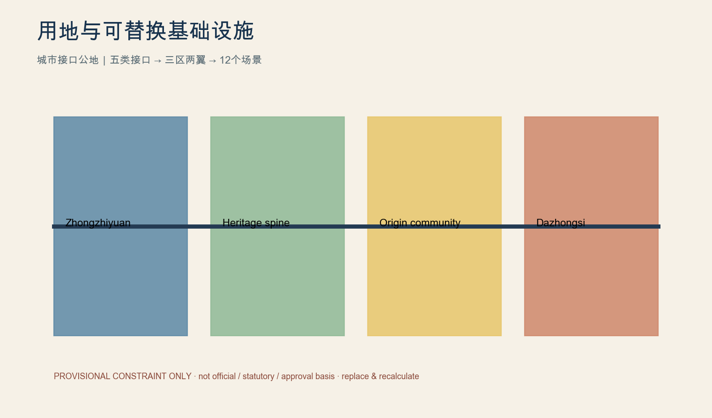
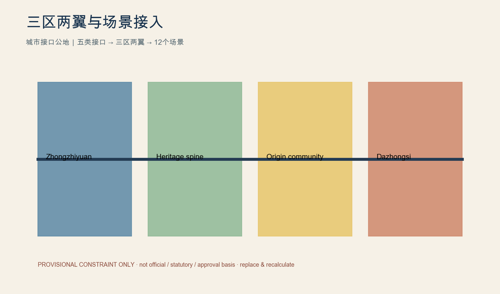
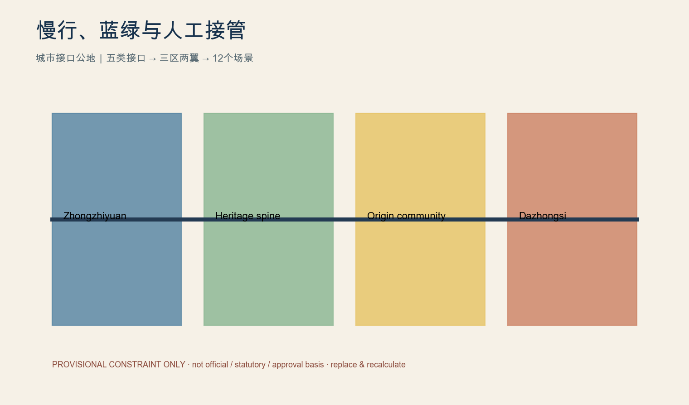
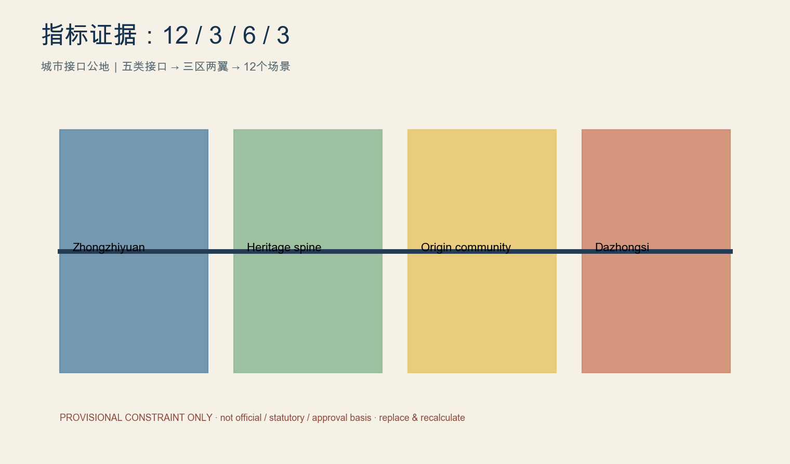

京张开放城市实验室 / JZ Open Urban Lab
城市接口公地：为可替换、可审计、可退出的城市AI接入预建设公共接口。
京张开放城市实验室
Urban Interface Commons｜城市接口公地：从“自主修铁路”到“自主定义未来技术如何进入城市”。

设计依据与资料清单
城市接口公地不是给铁路遗产加一层AI装饰，而是预先建设人才、算力与工具、数据、空间和真实场景五类公共接口，使模型、机器人和数字服务在统一规则下可接入、可替换、可审计、可退出。每一接口都明确服务对象、提供主体、使用者、申请条件、空间载体、数据规则、接入期限、人工责任人、暂停条件、退出机制、验收指标与失败后的场地恢复。众智园承担进入真实城市前的可靠性、弱网、端侧、互操作和人工接管验证；北京AI原点社区以居民需求—共创—小试—反馈—继续/修改/撤回为流程，保留拒绝权和人工服务；大钟寺承担AI原生服务、专业交流、创业资本和场景发布，不承诺确定的站城接口。中关村服务翼提供法律、知识产权、标准、人才、国际合作、数据合规和安全评估，小月河翼承载低风险、低速、公众可体验且可快速退出的试点。铁路遗产以保护性慢行主脊连接三处重点区，接口组件可拆、可换、可维修，包括电源网络、挂载点、停靠位、无障碍台、电子墨水牌、临时围合、断电点、手动接管点和反馈终端。所有范围为临时约束范围，绝不作为官方红线、法定控制或审批依据；获得正式SITE_BOUNDARY与KEY_AREA后必须替换并在EPSG:4548重算。 来源 空间数据 指标
三层范围工作框架
城市接口公地不是给铁路遗产加一层AI装饰，而是预先建设人才、算力与工具、数据、空间和真实场景五类公共接口，使模型、机器人和数字服务在统一规则下可接入、可替换、可审计、可退出。每一接口都明确服务对象、提供主体、使用者、申请条件、空间载体、数据规则、接入期限、人工责任人、暂停条件、退出机制、验收指标与失败后的场地恢复。众智园承担进入真实城市前的可靠性、弱网、端侧、互操作和人工接管验证；北京AI原点社区以居民需求—共创—小试—反馈—继续/修改/撤回为流程，保留拒绝权和人工服务；大钟寺承担AI原生服务、专业交流、创业资本和场景发布，不承诺确定的站城接口。中关村服务翼提供法律、知识产权、标准、人才、国际合作、数据合规和安全评估，小月河翼承载低风险、低速、公众可体验且可快速退出的试点。铁路遗产以保护性慢行主脊连接三处重点区，接口组件可拆、可换、可维修，包括电源网络、挂载点、停靠位、无障碍台、电子墨水牌、临时围合、断电点、手动接管点和反馈终端。所有范围为临时约束范围，绝不作为官方红线、法定控制或审批依据；获得正式SITE_BOUNDARY与KEY_AREA后必须替换并在EPSG:4548重算。 来源 空间数据 指标
统筹研究范围产业与未来城市研究
城市接口公地不是给铁路遗产加一层AI装饰，而是预先建设人才、算力与工具、数据、空间和真实场景五类公共接口，使模型、机器人和数字服务在统一规则下可接入、可替换、可审计、可退出。每一接口都明确服务对象、提供主体、使用者、申请条件、空间载体、数据规则、接入期限、人工责任人、暂停条件、退出机制、验收指标与失败后的场地恢复。众智园承担进入真实城市前的可靠性、弱网、端侧、互操作和人工接管验证；北京AI原点社区以居民需求—共创—小试—反馈—继续/修改/撤回为流程，保留拒绝权和人工服务；大钟寺承担AI原生服务、专业交流、创业资本和场景发布，不承诺确定的站城接口。中关村服务翼提供法律、知识产权、标准、人才、国际合作、数据合规和安全评估，小月河翼承载低风险、低速、公众可体验且可快速退出的试点。铁路遗产以保护性慢行主脊连接三处重点区，接口组件可拆、可换、可维修，包括电源网络、挂载点、停靠位、无障碍台、电子墨水牌、临时围合、断电点、手动接管点和反馈终端。所有范围为临时约束范围，绝不作为官方红线、法定控制或审批依据；获得正式SITE_BOUNDARY与KEY_AREA后必须替换并在EPSG:4548重算。 来源 空间数据 指标
总体设计范围城市更新与控规深度城市设计
城市接口公地不是给铁路遗产加一层AI装饰，而是预先建设人才、算力与工具、数据、空间和真实场景五类公共接口，使模型、机器人和数字服务在统一规则下可接入、可替换、可审计、可退出。每一接口都明确服务对象、提供主体、使用者、申请条件、空间载体、数据规则、接入期限、人工责任人、暂停条件、退出机制、验收指标与失败后的场地恢复。众智园承担进入真实城市前的可靠性、弱网、端侧、互操作和人工接管验证；北京AI原点社区以居民需求—共创—小试—反馈—继续/修改/撤回为流程，保留拒绝权和人工服务；大钟寺承担AI原生服务、专业交流、创业资本和场景发布，不承诺确定的站城接口。中关村服务翼提供法律、知识产权、标准、人才、国际合作、数据合规和安全评估，小月河翼承载低风险、低速、公众可体验且可快速退出的试点。铁路遗产以保护性慢行主脊连接三处重点区，接口组件可拆、可换、可维修，包括电源网络、挂载点、停靠位、无障碍台、电子墨水牌、临时围合、断电点、手动接管点和反馈终端。所有范围为临时约束范围，绝不作为官方红线、法定控制或审批依据；获得正式SITE_BOUNDARY与KEY_AREA后必须替换并在EPSG:4548重算。 来源 空间数据 指标
重点区域详细设计
城市接口公地不是给铁路遗产加一层AI装饰，而是预先建设人才、算力与工具、数据、空间和真实场景五类公共接口，使模型、机器人和数字服务在统一规则下可接入、可替换、可审计、可退出。每一接口都明确服务对象、提供主体、使用者、申请条件、空间载体、数据规则、接入期限、人工责任人、暂停条件、退出机制、验收指标与失败后的场地恢复。众智园承担进入真实城市前的可靠性、弱网、端侧、互操作和人工接管验证；北京AI原点社区以居民需求—共创—小试—反馈—继续/修改/撤回为流程，保留拒绝权和人工服务；大钟寺承担AI原生服务、专业交流、创业资本和场景发布，不承诺确定的站城接口。中关村服务翼提供法律、知识产权、标准、人才、国际合作、数据合规和安全评估，小月河翼承载低风险、低速、公众可体验且可快速退出的试点。铁路遗产以保护性慢行主脊连接三处重点区，接口组件可拆、可换、可维修，包括电源网络、挂载点、停靠位、无障碍台、电子墨水牌、临时围合、断电点、手动接管点和反馈终端。所有范围为临时约束范围，绝不作为官方红线、法定控制或审批依据；获得正式SITE_BOUNDARY与KEY_AREA后必须替换并在EPSG:4548重算。 来源 空间数据 指标
AI 创新生态、人才画像与 AI+ 场景
城市接口公地不是给铁路遗产加一层AI装饰，而是预先建设人才、算力与工具、数据、空间和真实场景五类公共接口，使模型、机器人和数字服务在统一规则下可接入、可替换、可审计、可退出。每一接口都明确服务对象、提供主体、使用者、申请条件、空间载体、数据规则、接入期限、人工责任人、暂停条件、退出机制、验收指标与失败后的场地恢复。众智园承担进入真实城市前的可靠性、弱网、端侧、互操作和人工接管验证；北京AI原点社区以居民需求—共创—小试—反馈—继续/修改/撤回为流程，保留拒绝权和人工服务；大钟寺承担AI原生服务、专业交流、创业资本和场景发布，不承诺确定的站城接口。中关村服务翼提供法律、知识产权、标准、人才、国际合作、数据合规和安全评估，小月河翼承载低风险、低速、公众可体验且可快速退出的试点。铁路遗产以保护性慢行主脊连接三处重点区，接口组件可拆、可换、可维修，包括电源网络、挂载点、停靠位、无障碍台、电子墨水牌、临时围合、断电点、手动接管点和反馈终端。所有范围为临时约束范围，绝不作为官方红线、法定控制或审批依据；获得正式SITE_BOUNDARY与KEY_AREA后必须替换并在EPSG:4548重算。 来源 空间数据 指标
用地、建筑规模与拆改留方案
城市接口公地不是给铁路遗产加一层AI装饰，而是预先建设人才、算力与工具、数据、空间和真实场景五类公共接口，使模型、机器人和数字服务在统一规则下可接入、可替换、可审计、可退出。每一接口都明确服务对象、提供主体、使用者、申请条件、空间载体、数据规则、接入期限、人工责任人、暂停条件、退出机制、验收指标与失败后的场地恢复。众智园承担进入真实城市前的可靠性、弱网、端侧、互操作和人工接管验证；北京AI原点社区以居民需求—共创—小试—反馈—继续/修改/撤回为流程，保留拒绝权和人工服务；大钟寺承担AI原生服务、专业交流、创业资本和场景发布，不承诺确定的站城接口。中关村服务翼提供法律、知识产权、标准、人才、国际合作、数据合规和安全评估，小月河翼承载低风险、低速、公众可体验且可快速退出的试点。铁路遗产以保护性慢行主脊连接三处重点区，接口组件可拆、可换、可维修，包括电源网络、挂载点、停靠位、无障碍台、电子墨水牌、临时围合、断电点、手动接管点和反馈终端。所有范围为临时约束范围，绝不作为官方红线、法定控制或审批依据；获得正式SITE_BOUNDARY与KEY_AREA后必须替换并在EPSG:4548重算。 来源 空间数据 指标
交通、轨道、市政与公共服务设施
城市接口公地不是给铁路遗产加一层AI装饰，而是预先建设人才、算力与工具、数据、空间和真实场景五类公共接口，使模型、机器人和数字服务在统一规则下可接入、可替换、可审计、可退出。每一接口都明确服务对象、提供主体、使用者、申请条件、空间载体、数据规则、接入期限、人工责任人、暂停条件、退出机制、验收指标与失败后的场地恢复。众智园承担进入真实城市前的可靠性、弱网、端侧、互操作和人工接管验证；北京AI原点社区以居民需求—共创—小试—反馈—继续/修改/撤回为流程，保留拒绝权和人工服务；大钟寺承担AI原生服务、专业交流、创业资本和场景发布，不承诺确定的站城接口。中关村服务翼提供法律、知识产权、标准、人才、国际合作、数据合规和安全评估，小月河翼承载低风险、低速、公众可体验且可快速退出的试点。铁路遗产以保护性慢行主脊连接三处重点区，接口组件可拆、可换、可维修，包括电源网络、挂载点、停靠位、无障碍台、电子墨水牌、临时围合、断电点、手动接管点和反馈终端。所有范围为临时约束范围，绝不作为官方红线、法定控制或审批依据；获得正式SITE_BOUNDARY与KEY_AREA后必须替换并在EPSG:4548重算。 来源 空间数据 指标
蓝绿空间、公共空间与城市风貌
城市接口公地不是给铁路遗产加一层AI装饰，而是预先建设人才、算力与工具、数据、空间和真实场景五类公共接口，使模型、机器人和数字服务在统一规则下可接入、可替换、可审计、可退出。每一接口都明确服务对象、提供主体、使用者、申请条件、空间载体、数据规则、接入期限、人工责任人、暂停条件、退出机制、验收指标与失败后的场地恢复。众智园承担进入真实城市前的可靠性、弱网、端侧、互操作和人工接管验证；北京AI原点社区以居民需求—共创—小试—反馈—继续/修改/撤回为流程，保留拒绝权和人工服务；大钟寺承担AI原生服务、专业交流、创业资本和场景发布，不承诺确定的站城接口。中关村服务翼提供法律、知识产权、标准、人才、国际合作、数据合规和安全评估，小月河翼承载低风险、低速、公众可体验且可快速退出的试点。铁路遗产以保护性慢行主脊连接三处重点区，接口组件可拆、可换、可维修，包括电源网络、挂载点、停靠位、无障碍台、电子墨水牌、临时围合、断电点、手动接管点和反馈终端。所有范围为临时约束范围，绝不作为官方红线、法定控制或审批依据；获得正式SITE_BOUNDARY与KEY_AREA后必须替换并在EPSG:4548重算。 来源 空间数据 指标
更新项目清单、实施政策与分期计划
城市接口公地不是给铁路遗产加一层AI装饰，而是预先建设人才、算力与工具、数据、空间和真实场景五类公共接口，使模型、机器人和数字服务在统一规则下可接入、可替换、可审计、可退出。每一接口都明确服务对象、提供主体、使用者、申请条件、空间载体、数据规则、接入期限、人工责任人、暂停条件、退出机制、验收指标与失败后的场地恢复。众智园承担进入真实城市前的可靠性、弱网、端侧、互操作和人工接管验证；北京AI原点社区以居民需求—共创—小试—反馈—继续/修改/撤回为流程，保留拒绝权和人工服务；大钟寺承担AI原生服务、专业交流、创业资本和场景发布，不承诺确定的站城接口。中关村服务翼提供法律、知识产权、标准、人才、国际合作、数据合规和安全评估，小月河翼承载低风险、低速、公众可体验且可快速退出的试点。铁路遗产以保护性慢行主脊连接三处重点区，接口组件可拆、可换、可维修，包括电源网络、挂载点、停靠位、无障碍台、电子墨水牌、临时围合、断电点、手动接管点和反馈终端。所有范围为临时约束范围，绝不作为官方红线、法定控制或审批依据；获得正式SITE_BOUNDARY与KEY_AREA后必须替换并在EPSG:4548重算。 来源 空间数据 指标
指标体系、面积复算与合规矩阵
城市接口公地不是给铁路遗产加一层AI装饰，而是预先建设人才、算力与工具、数据、空间和真实场景五类公共接口，使模型、机器人和数字服务在统一规则下可接入、可替换、可审计、可退出。每一接口都明确服务对象、提供主体、使用者、申请条件、空间载体、数据规则、接入期限、人工责任人、暂停条件、退出机制、验收指标与失败后的场地恢复。众智园承担进入真实城市前的可靠性、弱网、端侧、互操作和人工接管验证；北京AI原点社区以居民需求—共创—小试—反馈—继续/修改/撤回为流程，保留拒绝权和人工服务；大钟寺承担AI原生服务、专业交流、创业资本和场景发布，不承诺确定的站城接口。中关村服务翼提供法律、知识产权、标准、人才、国际合作、数据合规和安全评估，小月河翼承载低风险、低速、公众可体验且可快速退出的试点。铁路遗产以保护性慢行主脊连接三处重点区，接口组件可拆、可换、可维修，包括电源网络、挂载点、停靠位、无障碍台、电子墨水牌、临时围合、断电点、手动接管点和反馈终端。所有范围为临时约束范围，绝不作为官方红线、法定控制或审批依据；获得正式SITE_BOUNDARY与KEY_AREA后必须替换并在EPSG:4548重算。 来源 空间数据 指标
风险、版权与合规说明
城市接口公地不是给铁路遗产加一层AI装饰，而是预先建设人才、算力与工具、数据、空间和真实场景五类公共接口，使模型、机器人和数字服务在统一规则下可接入、可替换、可审计、可退出。每一接口都明确服务对象、提供主体、使用者、申请条件、空间载体、数据规则、接入期限、人工责任人、暂停条件、退出机制、验收指标与失败后的场地恢复。众智园承担进入真实城市前的可靠性、弱网、端侧、互操作和人工接管验证；北京AI原点社区以居民需求—共创—小试—反馈—继续/修改/撤回为流程，保留拒绝权和人工服务；大钟寺承担AI原生服务、专业交流、创业资本和场景发布，不承诺确定的站城接口。中关村服务翼提供法律、知识产权、标准、人才、国际合作、数据合规和安全评估，小月河翼承载低风险、低速、公众可体验且可快速退出的试点。铁路遗产以保护性慢行主脊连接三处重点区，接口组件可拆、可换、可维修，包括电源网络、挂载点、停靠位、无障碍台、电子墨水牌、临时围合、断电点、手动接管点和反馈终端。所有范围为临时约束范围，绝不作为官方红线、法定控制或审批依据；获得正式SITE_BOUNDARY与KEY_AREA后必须替换并在EPSG:4548重算。 来源 空间数据 指标
参考资料
城市接口公地不是给铁路遗产加一层AI装饰，而是预先建设人才、算力与工具、数据、空间和真实场景五类公共接口，使模型、机器人和数字服务在统一规则下可接入、可替换、可审计、可退出。每一接口都明确服务对象、提供主体、使用者、申请条件、空间载体、数据规则、接入期限、人工责任人、暂停条件、退出机制、验收指标与失败后的场地恢复。众智园承担进入真实城市前的可靠性、弱网、端侧、互操作和人工接管验证；北京AI原点社区以居民需求—共创—小试—反馈—继续/修改/撤回为流程，保留拒绝权和人工服务；大钟寺承担AI原生服务、专业交流、创业资本和场景发布，不承诺确定的站城接口。中关村服务翼提供法律、知识产权、标准、人才、国际合作、数据合规和安全评估，小月河翼承载低风险、低速、公众可体验且可快速退出的试点。铁路遗产以保护性慢行主脊连接三处重点区，接口组件可拆、可换、可维修，包括电源网络、挂载点、停靠位、无障碍台、电子墨水牌、临时围合、断电点、手动接管点和反馈终端。所有范围为临时约束范围，绝不作为官方红线、法定控制或审批依据；获得正式SITE_BOUNDARY与KEY_AREA后必须替换并在EPSG:4548重算。 来源 空间数据 指标
五类城市接口执行矩阵
| 接口 | 服务对象/提供主体 | 申请、空间与数据 | 期限/人工责任 | 暂停、退出与KPI |
|---|---|---|---|---|
| 人才接口 | 研究者、创业者、学生；服务翼协调 | 公开目的、驻留资格、共创屋 | 90天；项目负责人 | 投诉即停；结项回收；参与反馈 |
| 算力与工具接口 | 开发者；测试节点运营方 | 资源上限、边缘设备、SDK、日志 | 30天；技术责任人 | 日志缺失即停；断开令牌；故障恢复 |
| 数据接口 | 居民与服务团队；治理小组 | 最小化、分级、匿名、用途限制 | 试点到期删除；数据责任人 | 越权即停；删除留痕；投诉闭环 |
| 空间接口 | 公众与机器人；场地运营方 | 预约、安全清单、电源网络、接管点 | 7—30天；现场安全员 | 碰撞即停；拆除组件；恢复时间 |
| 场景接口 | 公众与试点团队；接入委员会 | 统一接入合同、非AI备选、KPI | 最长90天；场景责任人 | 安全/投诉/KPI失败即停；恢复人工服务 |
12 张场景卡
| 场景 | User / Problem | AI role / Non-AI fallback | Data / Human owner | Duration / Safety / Stop | Exit / KPI / Spatial interface |
|---|---|---|---|---|---|
| 无障碍 AI 伴行 | 居民/访客；真实服务障碍 | 辅助建议；人工或纸质回退 | 最小数据；场景责任人 | 90天；投诉/安全事件即停 | 撤除模块、恢复人工；反馈KPI；慢行脊或反馈台 |
| 铁路遗产 AI 导览 | 居民/访客；真实服务障碍 | 辅助建议；人工或纸质回退 | 最小数据；场景责任人 | 90天；投诉/安全事件即停 | 撤除模块、恢复人工；反馈KPI；慢行脊或反馈台 |
| 社区健康导航 | 居民/访客；真实服务障碍 | 辅助建议；人工或纸质回退 | 最小数据；场景责任人 | 90天；投诉/安全事件即停 | 撤除模块、恢复人工；反馈KPI；慢行脊或反馈台 |
| 儿童城市探索 | 居民/访客；真实服务障碍 | 辅助建议；人工或纸质回退 | 最小数据；场景责任人 | 90天；投诉/安全事件即停 | 撤除模块、恢复人工；反馈KPI；慢行脊或反馈台 |
| 低速无人配送测试 | 居民/访客；真实服务障碍 | 辅助建议；人工或纸质回退 | 最小数据；场景责任人 | 90天；投诉/安全事件即停 | 撤除模块、恢复人工；反馈KPI；慢行脊或反馈台 |
| 服务机器人公共空间测试 | 居民/访客；真实服务障碍 | 辅助建议；人工或纸质回退 | 最小数据；场景责任人 | 90天；投诉/安全事件即停 | 撤除模块、恢复人工；反馈KPI；慢行脊或反馈台 |
| AI 慢行提示辅助 | 居民/访客；真实服务障碍 | 辅助建议；人工或纸质回退 | 最小数据；场景责任人 | 90天；投诉/安全事件即停 | 撤除模块、恢复人工；反馈KPI；慢行脊或反馈台 |
| 公共空间数字孪生评估 | 居民/访客；真实服务障碍 | 辅助建议；人工或纸质回退 | 最小数据；场景责任人 | 90天；投诉/安全事件即停 | 撤除模块、恢复人工；反馈KPI；慢行脊或反馈台 |
| 公共服务 AI 问答 | 居民/访客；真实服务障碍 | 辅助建议；人工或纸质回退 | 最小数据；场景责任人 | 90天；投诉/安全事件即停 | 撤除模块、恢复人工；反馈KPI；慢行脊或反馈台 |
| 开放创新原型测试桌 | 居民/访客；真实服务障碍 | 辅助建议；人工或纸质回退 | 最小数据；场景责任人 | 90天；投诉/安全事件即停 | 撤除模块、恢复人工；反馈KPI；慢行脊或反馈台 |
| AI 文化共创 | 居民/访客；真实服务障碍 | 辅助建议；人工或纸质回退 | 最小数据；场景责任人 | 90天；投诉/安全事件即停 | 撤除模块、恢复人工；反馈KPI；慢行脊或反馈台 |
| 城市设施维护辅助 | 居民/访客；真实服务障碍 | 辅助建议；人工或纸质回退 | 最小数据；场景责任人 | 90天；投诉/安全事件即停 | 撤除模块、恢复人工；反馈KPI；慢行脊或反馈台 |
三个产业验证场
1. 城市机器人可靠性验证场：避障、碰撞、跌落、夜间、雨雪、噪声、续航、手动接管、老人儿童安全距离与故障恢复。 2. 端侧AI与智能空间互操作验证场：弱网、断网、本地推理、隐私最小化、多厂商设备、API、日志和故障恢复。 3. 可信城市AI验证场：准确率、偏差、来源、可解释性、人工复核、投诉、回滚和用户退出。
六类用户画像
AI研究者、AI创业团队、沿线居民、青少年/学生、老年人与无障碍用户、国际访客/产业合作方均可选择拒绝AI服务；他们共同担心隐私、安全、信息不对称和无人负责，均应得到现场说明、人工接管与投诉回应。



